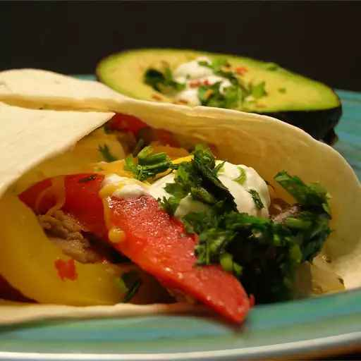

Fabulous Fajitas

Description
My kids hate onions and peppers, but they LOVE these fajitas. Pita breads, where available, can be substituted for tortillas.
Ingredients
- 2 green bell peppers, sliced
- 1 red bell pepper, sliced
- 1 onion, thinly sliced
- 1 cup fresh sliced mushrooms
- 2 cups diced, cooked chicken meat
- 1 (.7 ounce) package dry Italian-style salad dressing mix
- 10 (12 inch) flour tortillas
Steps
- Cut peppers and onion into thin slices. Do not dice, leave slices long and thin.
- Saute peppers and onion in a small amount of oil until tender. Add mushrooms and chicken. Continue to cook on low heat until heated through. Stir in dry salad dressing mix and blend thoroughly.
- Warm tortillas and roll mixture inside. If desired top with shredded cheddar cheese, diced tomato and shredded lettuce.
Home